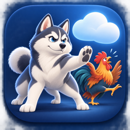

Last updated: October 28, 2026

Husky C-Blocker is a macOS menu bar app that lets you block selected service domains and pause protection on Wi-Fi networks you choose as Safe Zones. This policy explains how the app handles information.
Husky C-Blocker does not transmit your browsing activity, Wi-Fi names, block list, or preferences to the developer or an app-operated server. It has no accounts, advertisements, tracking, or third-party analytics SDKs. I do not sell or rent your personal information.
With your macOS approval, a local network extension examines the hostnames macOS makes available for network connections and compares them with your selected domains. It allows or blocks those connections on your Mac. It does not decrypt HTTPS content, install interception certificates, or route your traffic through a remote VPN server.
Safe Zones use Wi-Fi network names. macOS requires Location permission before it makes these names available to the app. Husky uses this permission to read the current Wi-Fi name; it does not request geographic coordinates or maintain a location history. It also reads whether macOS identifies your connection as metered or in Low Data Mode. Wi-Fi names remain on your Mac and hotspots are not automatically added to Safe Zones.
The app saves your chosen service domains, custom domains, Safe Zone Wi-Fi names, automation preferences, and protection preferences locally. To restore a manual override after restarting, it may save the Wi-Fi name and connection conditions associated with that choice. The network-filter configuration contains the selected blocked domains. These settings are not uploaded by Husky.
Husky writes operational messages to macOS diagnostic logs. Earlier development builds may include allowed or blocked hostnames and configured domain lists in those local logs. Updated builds omit domain names from filter logs. Husky does not automatically upload these logs. If you choose to send logs or a screenshot for support, review them first and remove information you do not want to share. Apple's own diagnostic services are governed by your macOS settings and Apple's privacy policy.
If you email support, your email address and the information you choose to send are used to respond to your request. This privacy page is hosted on GitHub Pages; GitHub may process website request information under its privacy statement. Visiting this page is separate from the app's local filtering.
This page will be updated when the app's privacy practices change. The date above identifies the latest revision.
For privacy questions about Husky C-Blocker, contact mykamel@gmail.com.